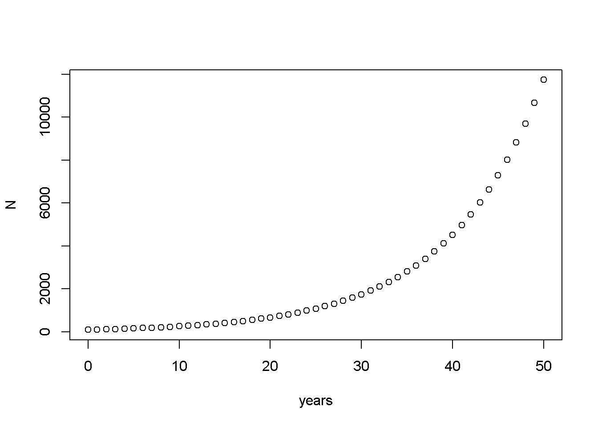
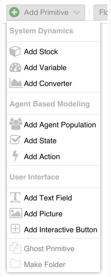
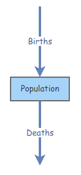
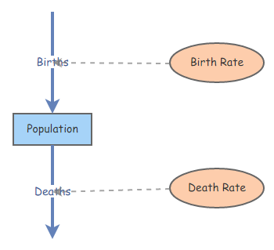

In this lab we will have an opportunity to do some simple population modeling using three different software packages: MS Excel, R, and InsightMaker. I encourage you to work in groups- but just remember you must submit individually!
First of all, we need a symbol to represent population size. This is \(N\)!
\(\Delta N\) represents the change in population size, \({N_{t+1}}-{N_t}\)
The famous “BIDE” equation is a way to break down \(\Delta N\) into components.
\(\Delta N = B + I - D - E \qquad \text{(Eq. 1)}\)
where \(B\) represents the number of births, \(I\) represents the number of immigrants, \(D\) represents the number of deaths, and \(E\) represents the number of emigrants.
If we ignore immigration and emigration, then the BIDE equation simplifies to:
\(\Delta N = B - D \qquad \text{(Eq. 2)}\)
Now let’s focus on \(B\) and \(D\). The important thing to recognize is that the number of births and deaths in a population is not constant.
What does the number of births depend on?
What is more likely to be constant is the per-capita rate of producing offspring, or dying. Does this make sense?
Examples of per-capita rates:
These per-capita rates are often expressed as lower case letters. So \(b\) represents per-capita birth rate, and \(d\) represents per-capita death rate (note: per-capita deaths are easier to think of as a fraction of the current population!).
To compute per-capita birth and death rates (alson known as population vital rates), you can just divide the total number of births (B) and deaths (D) by the population size N:
\(b = \frac {B_t}{N_t} \qquad \text{(Eq. 3)}\)
–or, re-factored in terms of B–
\(B_t = b \cdot N_t\)
The letter \(t\) of course represents time. So the above equation could be described as follows: “the number of births at a given time is equal to the per-capita birth rate times the total population size at that time”
Similarly,
\(D_t = d \cdot N_t \qquad \text{(Eq. 4)}\)
Okay, we’re almost there.
If \(\Delta N = B - D \qquad \text{(Eq. 5)}\)
then
\(\Delta N = b \cdot N_t - d \cdot N_t\qquad \text{(Eq. 6)}\)
which is equal to
\(\Delta N = (b - d) \cdot N_t \qquad \text{(Eq. 7)}\)
which could also be written:
\(\Delta N = r \cdot N_t\qquad \text{(Eq. 8)}\)
Where \(r\) represents the difference between the per-capita birth and death and death rates. If \(r\) is positive, then births are greater than deaths and the population grows. If \(r\) is negative then deaths exceed births and the population declines.
This is probably the most fundamental equation of population ecology.
We can use calculus notation to consider the change in population size for a continually growing population:
\(\frac{\partial N}{\partial t} = r \cdot N \qquad \text{(Eq. 9)}\)
If you integrate this equation across time from the initial time (t=0) to time t, you get an equation that describes the population size at any time \(t\):
\(N_t = N_0 e^{rt} \qquad \text{(Eq. 10)}\)
That is, population size at time \(t\) is equal to the population size at time zero (initial abundance, \(N_0\)) multiplied by the base of the natural logarithm (e) to the \(rt\) power.
There you have it! Now you can compute population growth and population size over time!
But wait, what about Lambda?? You’ve probably seen this term before to represent population growth rate.
The greek symbol lambda (\(\lambda\)), is used to represent the finite rate of growth, or \(\frac {N_{t+1}}{N_t}\).
Lambda is what you multiply the current population size by to compute the population size in the next time step.
\(N_{t+1}=N_t + B - D \qquad \text{(Eq. 11)}\)
\(N_{t+1}=N_t + b_d \cdot N_t - d_d \cdot N_t \qquad \text{(Eq. 12)}\)
I am using the d subscript to indicate that the per-capita birth and death rates now represent discrete growth (these rates only apply once per time step and are not compounded continuously)
Here are some expressions to illustrate the difference between discrete and continuous rates:
\(b=0.9\): “New individuals enter into the population at a rate of 0.9 per female per year, and these new individuals are born continuously throughout the year”
\(b_d=0.9\): “Babies enter into the population at a rate of 0.9 per adult female per year, but the entire pool of babies enters the population simultaneously on April 1 each year”
\(d=0.23\): “Approximately 23% of the population dies each year, but the deaths occur evenly throughout the year”
\(d_d=0.23\): “Approximately 23% of the population dies each year, but all the deaths are assumed to occur during winter hibernation each year”
\(r=0.15\): “The population is growing constantly (continuously) at a rate of exactly 15% per year (NOTE: this can be confusing- you will not have exactly 15% more individuals in the population one year later, but in fact you will have 16.2% more individuals due to the process of compounding! This should be more clear by the end of the lab)”.
\(r_d=0.15\): “The population size one year from now will be exactly 15% higher than it is today”
\(N_{t+1}=N_t + (b_d - d_d) \cdot N_t \qquad \text{(Eq. 13)}\)
\(N_{t+1}=N_t + r_d \cdot N_t \qquad \text{(Eq. 14)}\)
\(N_{t+1}=N_t \cdot (1 + r_d) \qquad \text{(Eq. 15)}\)
\(N_{t+1}=\lambda \cdot N_t \qquad \text{(Eq. 16)}\)
Just so you know, you can convert between Lambda and the continuous rate of growth (r) easily: all you need to do is use the natural logarithm:
\(e^r = \lambda\)
\(r = ln(\lambda)\)
Finally, if you want to compute the population size after \(t\) time-steps of discrete population growth (analogous to eq. 10) you can use the following equation:
\(N_t = N_0 * \lambda^{t} \qquad \text{(Eq. 17)}\)
Okay let’s start the lab! The first software we will use is our old friend, MS Excel!
Open the Excel spreadsheet ExpGrowthExcel.xlsx. To download this file, right click on the link and select “Save link as..”. In the first column, we have a timestep of 1 year for 30 years. In the second column, we have an initial population size (\(N_0\)) of 100 individuals. We also have a per-capita rate of increase (\(r\)) that is currently set at 0.1 (10%) per year. Assume for now that \(r\) represents \(r_d\), or the discrete rate of increase.
To generate \(N_t\) for the remaining time steps, we need to apply our knowledge of population ecology. Specifically we need to apply equation 16, above for modeling discrete population growth in a single time step. You will first want to convert \(r_d\) to \(\lambda\) using the formula \(\lambda = 1+r_d\). Do this by clicking in a cell (e.g., cell D5), typing ‘=’ in the cell (indicating that you are about to enter a formula), clicking on cell D3 (indicating that you will use this cell’s value in the formula) and adding 1. As you do this, you should see the equation you are creating appear in the equation editor. The formula should look like “=D3+1”. Next, you can apply equation 16 directly by clicking in the empty \(N_{1}\) cell (position B3), typing ‘=’ in the cell (indicating that you are about to enter a formula), clicking on the \(N_{0}\) cell (position B2– indicating that you will use this cell’s value in the formula), and completing the equation (e.g., "=B2*D5", where cell D5 stores \(\lambda\)). Hit enter.
You can fill the remainder of the cells using the same equation for the other time steps by clicking and dragging (or double clicking) the small square at the bottom of the N(2) cell, which appears when the cell is selected.
What happened? We are not seeing a growing population here- actually it seems quite flat! this is surely not what we want! Click on the N(3) cell to see what equation is being used to calculate the cell value. The equation is =B3*D6. The B3 part is correct - we want to calculate the N(3) population size using the \(N\) from the previous timestep - but the D6 part is incorrect. We always want to use the same \(\lambda\) - which is always in the same cell (cell D5). You can see that when you drag down an equation as we have done, Excel adds 1 for each row so that the equation references the same relative positions in the spreadsheet for each new cell you want to calculate. We like that Excel did that for \(N\), but not for \(r\) or \(\lambda\), so we can tell Excel to keep this value in the same row (row 3) for \(r\) (or \(\lambda\)) by inserting a dollar sign in our equation (in Excel terminology, this is a ‘fixed reference’).
In the N(2) cell, edit the equation in the equation editor (or ‘function bar’) above the spreadsheet so that there is a dollar sign in D3 (i.e., ‘D$3’ instead of ‘D3’) (or just use the F4 shortcut).
Now drag the equation down again, and you should have a population size in row 32 of 1745 (representing the population size at year 30!).
NOTE: you can format the cells in column B to be whole numbers using the context menu (select column B >> Format Cells >> Number >> Decimal places = 0)
Please provide short answers to the following questions (and you will be asked to provide your Excel spreadsheet via Top Hat).
Short answer (1a.) Change the per-capita growth rate to 0.07 in cell D3. Based on what we did together in the demo, this should change the value of abundance in year 30 (cell B32) automatically. Next, apply equation 10 (continuous-growth model- see above) to compute expected population size in year 30 (now you are assuming that the per-capita rate of growth represents continuous and not discrete growth). Do you get the same answer for the discrete-time model (analogous to what we did together as a demo) and the continuous-growth model? Why or why not? NOTE: computing abundance at time t in the continuous-time model is a single calculation- don’t overthink this one. You could use a calculator instead of Excel if you really want! HINT: use the EXP function in Excel to raise e (base of the natural logarithm) to any power: for example, to compute \(e^{1.7}\) you type “=EXP(1.7)” in Excel. In general, if you don’t know the syntax for a function in Excel, click on the button labeled “fx” and you can search for functions easily!
Short answer (1b.) What are the units of the per-capita rate of population growth, \(r\)? HINT: The answer is in the Gotelli book
Short answer (1c.) What if the time step for your simulation were half-years instead of one year? How would \(r\) change (i.e., if r represents per-capita growth in one year, what is the expected growth over a half-year)? HINT: just divide the rate by 2! Try it in Excel! Use both methods (eq. 16 vs equation 10) to compute population size at year 30 (that is, use both the discrete-time and continuous-time methods to compute the population size in year 30). (HINT: you should now use the half-year rate instead of the annual growth rate, and you should use 60 as the number of time steps). Do you see any difference between your answer (abundance at year 30) using the discrete-time formula (eq. 16) at a one-year time step vs. a half-year time step? Do you see any difference between your answer (abundance at year 30) using the continuous-time formula (eq. 10) at a one-year time step vs. a half-year time step? Would your discrete-time estimate of abundance at year 30 be closer to the continuous-time estimate if you used a one-month time step? [NOTE: you could test this using equation 17 with r equal to 1/12 of the value in cell D3 and number of time steps equal to 12*30]? Why or why not? [in other words, is the discrete-time estimate closer to the continuous-time abundance estimate when you use months instead of years as the time step?]
Short answer (1d.) What is the difference between continuous population growth and discrete population growth? Can you think of at least one case where continuous growth (eq. 10) would be a more biologically realistic model than discrete growth (eq. 16)? Can you think of at least one case where discrete-time population growth would be a more biologically realistic model than continuous growth? Justify your answer.
R is the most common software used by ecologists and conservation biologists for data analysis and simulation. R is incredibly powerful and useful, but there is a little bit of a learning curve with R! I will try to integrate R into this class as much as I can. We will do more with R when we get into data analysis! And you will do a LOT more with R in NRES 488!
Open the R software from the program menu or desktop.
Go to website http://cran.r-project.org/. This is the source for the free, public-domain R software and where you can access R packages, find help, access the user community, etc.
Install Rstudio. This is a program that makes R easier to use!
If you already have some R expertise, this is your opportunity to help your peers develop the level of comfort and familiarity with R that they will need to perform data analysis and programming tasks in this course.
Depending on whether you are already familiar with R, you may also find the remainder of this document useful as you work your way through the course (and there are many other good introductory R resources available online… let me know if there is one you particularly like and I will add it to the course website (Links page)). As you work your way through this tutorial on your own pace, please ask the instructor or your peers if you are uncertain about anything.
For a more detailed tutorial, see my “R Bootcamp” website: https://kevintshoemaker.github.io/R-Bootcamp/!
The first thing we usually do when we start an R session is we:
In this lab, setting up the workspace is easy. We don’t need to load any packages or define any new functions. We just need to define our parameter of interest - \(r\) -, and set up a storage vector to store population abundance over time.
We can store data in memory by assigning it to an “object” using the assignment operator <-. For example, this would assign the object “x” the value of 5.
x <- 5 # define the variable 'x' as representing the value 5
x # Print the value stored in the object "x"Note that any text after a pound sign (#) is not evaluated by R. These are comments and are intended to help you follow the code. You should always include comments in any code that you write- we humans tend to read and understand written language better than computer code!
Let’s assign our per-capita population growth rate, \(r\) (but this could be called anything), and our initial population size to an object called N0 (that is, population size at time 0), and the number of years to simulate.
r <- 0.1 #Assign the value of 0.1 to the object "r", or per-capita growth rate (discrete)
lambda <- 1 + r # (1 + r) is equal to lambda, the finite rate of growth. This stores the result of the calculation (1 + 0.1 = 1.1) in the object "lambda".
N0 <- 100 #Assign the value of 100 to the object "N0", or initial population size
nyears <- 30 #Assign the value of 30 to the object "nyears", or the number of time steps to simulateIf we want to know what the population size is at the next time step, we can simply multiply N0 by lambda.
N0 * lambda #Multiplies the value stored in the object "N0" by lambda. As soon as you run this line of code, the result of the calculation is printed.## [1] 110How can we find the population size for the next 30 years? Let’s first make an object that is a vector of years using the seq() or “sequence” function.
year <- seq(from=0, to=nyears, by=1) #Creates a sequence of numbers from 0 to the value stored in the object "nyears" (in this case, 50). Because you've told this sequence to increment by 1, you've created a string of numbers from 0 - 50 that contains 51 elements. A single series of elements (e.g., a single column of numbers) is called a vector. You then assign this vector to the object "years".
year #Print the value of the object "years" that you just created.## [1] 0 1 2 3 4 5 6 7 8 9 10 11 12 13 14 15 16 17 18 19 20 21 22 23 24
## [26] 25 26 27 28 29 30Now, let’s build a storage structure to store simulated population size over this time period
N <- numeric(nyears+1) #Make an empty storage vector. The numeric() function takes the contents within the parentheses and converts those contents to the "numeric" class. Don't worry if this doesn't make sense -- what you need to know is that the value within the parentheses (in this case, 50+1=51) is used to tell this function how many zeros to create. So, this line of code creates a vector of 51 zeros, and assigns that vector to the object "N".
names(N) <- year
N #Prints the contents of the object "N".## 0 1 2 3 4 5 6 7 8 9 10 11 12 13 14 15 16 17 18 19 20 21 22 23 24 25
## 0 0 0 0 0 0 0 0 0 0 0 0 0 0 0 0 0 0 0 0 0 0 0 0 0 0
## 26 27 28 29 30
## 0 0 0 0 0Then we can use a for loop (a very powerful computer programming trick) to automatically generate the population size for each of those years (note the similarity in the equation inside the for loop to Expression 1.15 in Gotelli).
N[1] <- N0 # The brackets [] are used to indicate the position of an element within a vector. This line of code assigns the value of the object "N0" (100) to the first element in the "N" object. Remember, the "N" object is a vector of 51 zeros. Now, the first zero is changed to 100.
for (i in 2:(nyears+1)){ # This for-loop will run through the line of code between the curly brackets {}. "i" is simply the name of a variable (you can use "j", or "k", instead -- any variable name will do). "i" changes each time the loop iterates; basically, it will increase by 1 each time the loop is run, starting at "2" up until the specified maximum number of loops "nyears+1".
N[i] <- N[i-1] * lambda # This takes the [i - 1] element of "N", multiplies that element by the value of lambda, then assigns that calculated result to the [i] element of "N".
} # This ends the for-loop.
N # Now print the contents of the object "N".## 0 1 2 3 4 5 6 7
## 100.0000 110.0000 121.0000 133.1000 146.4100 161.0510 177.1561 194.8717
## 8 9 10 11 12 13 14 15
## 214.3589 235.7948 259.3742 285.3117 313.8428 345.2271 379.7498 417.7248
## 16 17 18 19 20 21 22 23
## 459.4973 505.4470 555.9917 611.5909 672.7500 740.0250 814.0275 895.4302
## 24 25 26 27 28 29 30
## 984.9733 1083.4706 1191.8177 1310.9994 1442.0994 1586.3093 1744.9402Let’s plot our population size against time.
plot(N~years) #This plot() function tells R to plot the y variable by the x variable. "N" is the y variable (dependent variable), and "years" is the x variable (independent variable). The tilda "~" stands for "as a function of". There are many ways to customize the appearance of a plot in R - for now, just use the defaults.
You should already have created a free account in insightmaker, and you should already know the basics about how to set up and run a model.
Click “Create New Insight” to start a new model (click “Clear this Demo” to clear the canvas and have an open workspace). Save the blank model by clicking the “Save” button.
Create a new [Stock] named Population using the “Add Primitive” button at top left (“Primitive” is just a computer-sciencey term referring to basic building blocks of a computer programming language). You can name the [Stock] and configure it in the properties tab at the right. Make sure you set the [Stock] so that negative values are NOT allowed.

Change the Initial Value of Population to 100.
Create a new [Flow] going from empty space to the primitive Population (make sure the Flow/Transitions button is activated instead of Links at the top, hover over Population until an arrow appears, click and drag to create the [Flow], use the Reverse Connection Direction button to change the flow direction). Name the flow Births.
Create a new [Flow] going from Population to empty space. Name the flow Deaths.
The model diagram should now look something like this:

Change the Flow Rate property of Births to 0.16 \(*\) [Population]. This represents the total number of individuals entering the [Stock] (population) in each time step.
Change the Flow Rate property of Deaths to 0.10 \(*\) [Population]. This represents the total number of individuals leaving the [Stock] (population) in each time step.
Can you already tell whether this is a growing or declining population? (just a quick thought question, not part of the written lab!)
Please provide short answers to the following questions, and (when prompted) provide your “Insights” to back up your answers.
First, modify the above model so that per-capita (discrete) birth rate (\(b_d\)) and death rate (\(d_d\)) are separate elements of the model (using the “Variable” primitive). Your Insight should look something like this:

To enable easy manipulation of these variables, change the Show Value Slider options for Birth Rate and Death Rate (in the properties windows for these variables) to ‘Yes’. For both of these two variables, change the Slider Max value to 1, the Slider Min value to 0, and the Slider Step value to 0.01. For Population, set the Show Value Slider option to ‘Yes’; for this slider (which represents initial abundance \(N_0\)), set the maximum slider value to 1000 and set the slider step size to 1 so we don’t have fractional individuals!
Now click on the white space of your model; you should now see the Birth Rate, Population and Death Rate sliders on the info tab. Change the slider values of the rates a few times, re-running the simulation each time. When you are confident that your model is working right, share it with your instructor and TA (save as a “public insight” and insert URL in the appropriate place in Top Hat).
Clone your previous Insight before you move on to the next problem (otherwise any changes you make will carry over to your answer to the previous problem!). The “Clone Insight” link is located in the upper right corner. In general, always clone your Insights after you have copied a link to an insight into your lab write-up. That way, you won’t inadvertently change a model before your instructors have a chance to verify you did everything right!
##Checklist for Lab 1 completion *Please submit all files (Excel file as attachment in Top Hat and R script as text pasted into Top Hat) and responses via Top Hat. The InsightMaker models should be shared by saving your Insights as “public” and sharing the URL link with your instructors in Top Hat.
Due Feb. 4